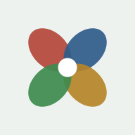

<!doctype html><html lang="ko"><head><meta charset=utf8><meta name=viewport content="width=device-width,initial-scale=1,viewport-fit=cover"><style>:root{color-scheme:light;box-sizing:border-box;padding-top:env(safe-area-inset-top,0px);padding-bottom:env(safe-area-inset-bottom,0px)}html{scroll-padding-top:env(safe-area-inset-top,0px)}body{margin:0;padding:0;font:14px -apple-system,BlinkMacSystemFont,sans-serif;background:#fff;color:#000}img{max-width:100%}[hidden]:not([hidden=until-found i]){display:none!important}</style><meta name="theme-color" content="#1F5C4C"><link rel="manifest" href="manifest.json"><link rel="icon" href="icons/favicon.svg" type="image/svg+xml"><link rel="apple-touch-icon" href="icons/apple-touch-icon.png"><meta name="apple-mobile-web-app-capable" content="yes"><meta name="mobile-web-app-capable" content="yes"><meta name="apple-mobile-web-app-title" content="온유"><meta name="apple-mobile-web-app-status-bar-style" content="default"><meta name="description" content="나의 사상체질을 알아보고 체질에 맞는 음식·차·운동을 안내하는 앱"><title>온유 체질진단</title></head><body>
<link rel="preconnect" href="https://fonts.googleapis.com">
<link rel="stylesheet" href="https://fonts.googleapis.com/css2?family=Gowun+Batang:wght@400;700&family=IBM+Plex+Sans+KR:wght@400;500;600;700&display=swap">
<style>
/* Layout: 한 손으로 쓰는 단일 컬럼 앱. 시작 → 질문 → 결과 세 화면을 한 페이지에서 전환 */
:root{
  --bg:#EEF2EF; --surface:#FFFFFF; --ink:#18231E; --muted:#5B6A62; --line:#D5DED8;
  --accent:#1F5C4C; --accent-soft:#DCEAE4;
  --tae-eum:#2F5D8A; --so-yang:#3E8A4F; --so-eum:#B5852A; --tae-yang:#B3473A;
  --oh-wood:#2E7D5B; --oh-fire:#C2412F; --oh-earth:#D9A21B; --oh-metal:#F4F2EC; --oh-water:#262A2E;
  --font-display:"Gowun Batang","Nanum Myeongjo",serif;
  --font-body:"IBM Plex Sans KR","Apple SD Gothic Neo","Malgun Gothic",sans-serif;
  --r:18px;
}
@media (prefers-color-scheme:dark){:root:not([data-theme="light"]){
  --bg:#111815; --surface:#1A2420; --ink:#E7EEEA; --muted:#9DB0A6; --line:#2C3A34;
  --accent:#7CC3AA; --accent-soft:#213730;
  --tae-eum:#7BA9D6; --so-yang:#7FC58E; --so-eum:#E0B862; --tae-yang:#E58B7E; --oh-wood:#4FAF84; --oh-fire:#E06A55; --oh-earth:#E9BC45; --oh-metal:#F1EFE8; --oh-water:#0B0D0F; color-scheme:dark}}
:root[data-theme="dark"]{
  --bg:#111815; --surface:#1A2420; --ink:#E7EEEA; --muted:#9DB0A6; --line:#2C3A34;
  --accent:#7CC3AA; --accent-soft:#213730;
  --tae-eum:#7BA9D6; --so-yang:#7FC58E; --so-eum:#E0B862; --tae-yang:#E58B7E; --oh-wood:#4FAF84; --oh-fire:#E06A55; --oh-earth:#E9BC45; --oh-metal:#F1EFE8; --oh-water:#0B0D0F; color-scheme:dark}
*{box-sizing:border-box}
body{background:var(--bg);color:var(--ink);font-family:var(--font-body);font-size:17px;line-height:1.6;margin:0}
.app{max-width:480px;margin:0 auto;padding-inline:18px;padding-block:20px 40px;display:flex;flex-direction:column;gap:20px;min-height:100%}
h1,h2,h3{font-family:var(--font-display);text-wrap:balance;margin:0;line-height:1.3}
button{font:inherit;color:inherit;cursor:pointer}
button:focus-visible{outline:3px solid var(--accent);outline-offset:2px}
.eyebrow{font-size:13px;letter-spacing:.08em;color:var(--muted);font-weight:600}
.btn{border:0;border-radius:14px;padding:17px 20px;font-size:18px;font-weight:700;background:var(--accent);color:var(--surface);width:100%}
.btn.ghost{background:transparent;border:1.5px solid var(--line);color:var(--ink);font-weight:600}
.note{font-size:14px;color:var(--muted)}

/* 시작 화면 */
.hero{display:flex;flex-direction:column;gap:14px;padding-top:12px}
.hero h1{font-size:34px}
.hero p{margin:0;color:var(--muted)}
.grid4{display:grid;grid-template-columns:1fr 1fr;gap:10px}
.cell{background:var(--surface);border-radius:var(--r);padding:16px 14px;display:flex;flex-direction:column;gap:4px;border:1px solid var(--line)}
.cell b{font-family:var(--font-display);font-size:21px}
.cell .organ{font-size:13px;color:var(--muted);font-variant-numeric:tabular-nums}
.cell .dot{width:10px;height:10px;border-radius:50%}
.axis{display:flex;justify-content:space-between;gap:8px;font-size:12px;color:var(--muted);padding-inline:4px}
.meta{display:flex;gap:16px;font-size:14px;color:var(--muted)}
.last{background:var(--accent-soft);border-radius:var(--r);padding:14px 16px;display:flex;justify-content:space-between;align-items:center;gap:12px}
.last button{border:0;background:var(--surface);border-radius:10px;padding:8px 12px;font-weight:600;font-size:15px}

/* 질문 화면 */
.top{display:flex;align-items:center;gap:12px}
.back{border:0;background:var(--surface);width:44px;height:44px;border-radius:12px;font-size:20px;flex:none}
.bar{flex:1;height:8px;background:var(--line);border-radius:99px;overflow:hidden}
.bar i{display:block;height:100%;background:var(--accent);border-radius:99px;transition:width .3s}
.count{font-size:15px;font-weight:600;font-variant-numeric:tabular-nums;color:var(--muted);flex:none}
.qcat{color:var(--accent);font-weight:700;font-size:15px}
.q h2{font-size:26px;margin-top:6px}
.opts{display:flex;flex-direction:column;gap:10px}
.opt{text-align:left;background:var(--surface);border:2px solid var(--line);border-radius:16px;padding:18px;font-size:18px;line-height:1.45;display:flex;gap:12px;align-items:center;transition:border-color .15s,background .15s}
.opt:hover{border-color:var(--accent)}
.opt.on{border-color:var(--accent);background:var(--accent-soft)}
.opt .k{flex:none;width:30px;height:30px;border-radius:50%;border:2px solid var(--line);display:grid;place-items:center;font-size:14px;font-weight:700;color:var(--muted)}
.opt.on .k{background:var(--accent);border-color:var(--accent);color:var(--surface)}

/* 결과 화면 */
.res-head{background:var(--surface);border-radius:22px;padding:24px 20px;display:flex;flex-direction:column;gap:10px;border-top:6px solid var(--c)}
.res-head h1{font-size:42px;color:var(--c)}
.res-head .organ{font-weight:600}
.res-head p{margin:0;color:var(--muted)}
.scores{display:flex;flex-direction:column;gap:9px}
.srow{display:grid;grid-template-columns:56px 1fr 42px;gap:10px;align-items:center;font-size:15px}
.srow .track{height:10px;background:var(--line);border-radius:99px;overflow:hidden}
.srow .track i{display:block;height:100%;border-radius:99px}
.srow .v{text-align:right;font-variant-numeric:tabular-nums;color:var(--muted)}
.close{font-size:14px;color:var(--muted);margin:0}
.tabs{display:flex;gap:6px;overflow-x:auto;padding-bottom:2px;scrollbar-width:none}
.tab{flex:none;border:1.5px solid var(--line);background:var(--surface);border-radius:99px;padding:9px 15px;font-size:15px;font-weight:600}
.tab.on{background:var(--ink);color:var(--bg);border-color:var(--ink)}
.panel{background:var(--surface);border-radius:var(--r);padding:20px;display:flex;flex-direction:column;gap:12px}
.panel h3{font-size:21px}
.chips{display:flex;flex-wrap:wrap;gap:8px}
.chip{background:var(--accent-soft);border-radius:10px;padding:7px 12px;font-size:16px}
.chip.no{background:transparent;border:1.5px dashed var(--line);color:var(--muted);text-decoration:line-through;text-decoration-color:var(--muted)}
.panel p{margin:0}
.traits{margin:0;padding-left:20px;display:flex;flex-direction:column;gap:4px}
.warn{border:1.5px solid var(--line);border-radius:var(--r);padding:14px 16px;font-size:14px;color:var(--muted)}
.row2{display:grid;grid-template-columns:1fr 1fr;gap:10px}
.days{display:grid;grid-template-columns:repeat(7,1fr);gap:6px}
.day{border:1.5px solid var(--line);background:var(--bg);border-radius:12px;padding:10px 0;font-weight:700;font-size:16px}
.day.on{background:var(--accent);border-color:var(--accent);color:var(--surface)}
.meals{display:flex;flex-direction:column;border:1px solid var(--line);border-radius:14px;overflow:hidden}
.meal{display:flex;gap:14px;align-items:baseline;padding:14px 16px;justify-content:space-between}
.meal+.meal{border-top:1px solid var(--line)}
.meal span:last-child{flex:1;min-width:0}
.mk{flex:none;font-weight:700;color:var(--accent);font-size:15px;width:34px}
.meal .dose{flex:none!important;color:var(--muted);font-size:15px;text-align:right;font-variant-numeric:tabular-nums}
.cards{display:flex;flex-direction:column;gap:10px}
.tcard{border:1px solid var(--line);border-radius:14px;padding:16px;display:flex;flex-direction:column;gap:8px}
.tcard b{font-family:var(--font-display);font-size:20px}
.thead{display:flex;justify-content:space-between;align-items:center;gap:8px}
.nat{font-size:13px;font-weight:600;background:var(--accent-soft);color:var(--accent);border-radius:99px;padding:3px 10px}
.tcard dl{margin:0;display:grid;grid-template-columns:auto 1fr;gap:6px 12px;font-size:16px}
.tcard dt{color:var(--muted);font-size:14px;padding-top:2px}
.tcard dd{margin:0;min-width:0}
.src{font-size:15px}.src span{color:var(--muted);font-size:13px;margin-right:6px}
.stats{display:grid;grid-template-columns:1fr 1fr 1.4fr;gap:8px}
.stats div{background:var(--accent-soft);border-radius:12px;padding:10px 12px;display:flex;flex-direction:column;gap:2px;min-width:0}
.stats span{font-size:13px;color:var(--muted)}.stats b{font-size:15px;line-height:1.35}
.organs{display:flex;flex-wrap:wrap;gap:8px;margin-top:4px}
.og{display:inline-flex;align-items:center;gap:8px;background:var(--bg);border-radius:99px;padding:7px 14px 7px 8px;font-size:15px;color:var(--muted)}
.og b{color:var(--ink)}
.og i,.wheel i,.sw{display:inline-block;width:18px;height:18px;border-radius:50%;border:1.5px solid var(--line);flex:none}
.ohrow{display:flex;flex-direction:column;gap:10px}
.ohrow+.ohrow{border-top:1px solid var(--line);padding-top:14px}
.ohcard{display:flex;gap:12px;align-items:center}
.ohcard .sw{width:34px;height:34px;background:var(--sw)}
.ohcard b{font-size:18px;display:block}
.lbl{font-size:13px;color:var(--muted);font-weight:600}
.chip.cc{background:var(--surface);border:1.5px solid var(--line);box-shadow:inset 5px 0 0 var(--sw);padding-left:15px}
.wheel{display:flex;flex-wrap:wrap;gap:4px;align-items:center;margin-top:6px}
.ar{color:var(--muted);font-size:13px;font-weight:400}
.tags{display:flex;gap:6px;margin-top:4px}.tags em{font-style:normal;font-size:13px;font-weight:600;border:1px solid var(--line);border-radius:6px;padding:1px 8px;color:var(--muted)}
.wheel span{display:inline-flex;align-items:center;gap:6px;font-size:13px;color:var(--muted);border:1px solid var(--line);border-radius:99px;padding:4px 10px 4px 5px}
.wheel i{width:14px;height:14px}
.wheel .w{color:var(--ink);font-weight:700;border-color:var(--ink)}
.wheel .s{color:var(--ink);font-weight:600;border-style:dashed}
.logo{display:inline-flex;align-items:center;gap:10px}
.logo svg{flex:none}
.wm{display:flex;flex-direction:column;line-height:1.05}
.wm b{font-family:var(--font-display);font-weight:700;font-size:22px;letter-spacing:.02em}
.wm small{font-size:10px;letter-spacing:.32em;color:var(--muted);font-weight:600;margin-top:2px}
.top .wm b{font-size:17px}.top .wm small{font-size:9px}
.hero .wm b{font-size:26px}
.cell{font:inherit;text-align:left;cursor:pointer;transition:border-color .15s}
.cell:hover{border-color:var(--accent)}
.cell .more{font-size:13px;color:var(--accent);font-weight:600;margin-top:4px}
.ladwrap{padding:12px 8px}
.ladder{width:100%;height:auto;display:block;max-width:400px;margin:0 auto}
.rail{fill:none;stroke:var(--line);stroke-width:3;stroke-linecap:round;stroke-linejoin:round;stroke-dasharray:6 6}
.rail.on{stroke:var(--accent);stroke-width:4.5;stroke-dasharray:none}
.rail.draw{stroke-dasharray:1;stroke-dashoffset:1;animation:draw .7s ease forwards}
@keyframes draw{to{stroke-dashoffset:0}}
.yn{font-size:11px;fill:var(--muted);font-family:var(--font-body)}
.yn.on{fill:var(--accent);font-weight:700}
.node{fill:var(--surface);stroke:var(--line);stroke-width:2.5}
.node.past{fill:var(--accent);stroke:var(--accent)}
.node.now{fill:var(--surface);stroke:var(--accent);stroke-width:4}
.nlab{font-size:13px;font-weight:700;fill:var(--muted);font-family:var(--font-body)}
.nlab.past{fill:var(--surface)}.nlab.now{fill:var(--accent)}
.slot rect{fill:var(--bg);stroke:var(--line);stroke-width:2}
.slot text{font-size:14px;font-weight:700;fill:var(--muted);font-family:var(--font-display)}
.slot.hit rect{fill:var(--c);stroke:var(--c);animation:pop .5s .7s both}
.slot.hit text{fill:var(--surface)}
@keyframes pop{0%{transform:scale(1)}50%{transform:scale(1.12)}100%{transform:scale(1)}}
.slot{transform-box:fill-box;transform-origin:center}
.slot.hit rect{transform-box:fill-box;transform-origin:center}
.token{fill:var(--ink);stroke:var(--surface);stroke-width:3;offset-distance:100%;animation:ride .7s ease both}
.token.still{animation:none}
@keyframes ride{from{offset-distance:0%}to{offset-distance:100%}}
.lq h2{font-size:24px;margin-top:6px;word-break:keep-all}
.yn2 .btn{font-size:20px;padding:20px}
.reveal{background:var(--surface);border-radius:22px;padding:24px 20px;display:flex;flex-direction:column;gap:10px;border-top:6px solid var(--c);animation:in .4s .8s both}
.reveal h1{font-size:42px;color:var(--c)}
.reveal p{margin:0;color:var(--muted)}
.reveal .organ{font-weight:600}
@media (prefers-reduced-motion:reduce){.rail.draw,.token,.slot.hit rect,.reveal{animation:none;stroke-dashoffset:0}}
.cell{align-items:center;text-align:center;gap:6px;padding:18px 12px 14px}
.cell b{color:var(--c);font-size:23px}
.cell .fig{margin-bottom:4px}
.pill{font-size:13px;font-weight:700;background:var(--bg);color:var(--c);border-radius:99px;padding:3px 12px}
.bnote{font-size:14px;line-height:1.4;word-break:keep-all;color:var(--ink);min-height:2.8em}
.rh{display:flex;justify-content:space-between;align-items:center;gap:12px}
.ic{margin-right:6px;display:inline-flex;vertical-align:-0.2em}
.ic svg{width:1.35em;height:1.35em}
.chip.no s{text-decoration:line-through;text-decoration-color:var(--muted)}
.chip.no{text-decoration:none}
.exi{display:flex;align-items:center}
.pick{display:grid;grid-template-columns:1fr 1fr;gap:10px}
.pk{background:var(--surface);border:2px solid var(--line);border-radius:18px;padding:16px 0 18px;display:flex;flex-direction:column;align-items:center;gap:8px;overflow:hidden;transition:border-color .15s}
.pk:hover,.pk:focus-visible{border-color:var(--accent);background:var(--accent-soft)}
.pk .art{height:104px;display:grid;place-items:center}
.pk .em{font-size:72px;line-height:1}
.pk .cap{font-size:17px;font-weight:600;line-height:1.35;text-align:center;word-break:keep-all;min-height:2.7em;padding-inline:10px}
.pk .yl{align-self:stretch;background:var(--accent);color:var(--surface);font-weight:700;font-size:19px;padding:12px 0;margin-top:auto}
.pk#no .yl{background:var(--ink)}
.lnote{margin:0;font-weight:600;color:var(--ink)!important}
.agree{background:var(--surface);border:1.5px dashed var(--line);border-radius:16px;padding:14px 16px;font-size:15px;line-height:1.55;display:flex;flex-direction:column;gap:10px}
.agree p{margin:0}
.agree.ok{border-style:solid;border-color:var(--accent);background:var(--accent-soft)}
.install{background:var(--surface);border:2px solid var(--accent);border-radius:var(--r);padding:18px;display:flex;flex-direction:column;gap:12px}
.install .ih{display:flex;align-items:center;gap:12px}
.install .ih img{width:52px;height:52px;border-radius:14px;flex:none}
.install b{font-size:19px;display:block}
.install p{margin:0;font-size:16px;color:var(--muted);word-break:keep-all}
.install ol{margin:0;padding-left:22px;font-size:17px;display:flex;flex-direction:column;gap:6px}
.install .share{display:inline-block;border:1.5px solid var(--line);border-radius:6px;padding:0 6px;font-size:15px}
.install .row{display:flex;gap:8px}
.install .row .btn{padding:14px}
.install .row .later{flex:none;width:auto;padding-inline:16px}
.toast{position:fixed;left:50%;bottom:calc(24px + env(safe-area-inset-bottom,0px));transform:translateX(-50%);background:var(--ink);color:var(--bg);padding:10px 18px;border-radius:99px;font-size:15px}
.screen{display:flex;flex-direction:column;gap:20px;animation:in .3s ease}
@keyframes in{from{transform:translateY(8px)}to{transform:none}}
@media (prefers-reduced-motion:reduce){.screen{animation:none}.bar i{transition:none}}
</style>

<div class="app" id="app"></div>
<div class="toast" id="toast" hidden></div>

<script>
const TYPES = {
  "태음인": {c:"--tae-eum", organ:"간대폐소 · 간 기능이 크고 폐 기능이 작음", ratio:"한국인 약 40~50%",
    summary:"체격이 크고 하체가 튼튼합니다. 흡수력이 좋아 살이 잘 찌고, 땀을 흘리면 몸이 개운해지는 체질입니다.",
    traits:["체격이 크고 살이 잘 찜","식욕 왕성, 소화가 잘 됨","땀이 많고 더위를 잘 탐","느긋하고 끈기 있음","잠이 많고 깊음"],
    food:["콩·두부","율무","도라지","버섯","무","곡류 혼합식","소고기","밤"], avoid:["기름진 음식","과식","야식","잦은 음주","운동 부족"],
    tea:["도라지차","율무차","칡차"], teaNote:"호흡기와 순환을 돕는 차가 잘 맞습니다.",
    exercise:"땀을 흠뻑 내는 유산소 운동이 좋습니다. 수영·조깅·등산을 주 3회 이상, 30~40분.",
    nutrients:["비타민 C","항산화 성분","식이섬유"], tip:"과식만 줄여도 체중과 붓기가 함께 내려갑니다."},
  "소양인": {c:"--so-yang", organ:"비대신소 · 소화기가 크고 신장 기능이 작음", ratio:"한국인 약 30%",
    summary:"상체가 발달하고 몸에 열이 많습니다. 행동이 빠르고 활발하지만 쉽게 지치기도 합니다.",
    traits:["상체 발달, 얼굴이 갸름함","소화는 잘 되지만 급하게 먹음","더위를 잘 타고 땀이 많음","활발하고 성격이 급함","화를 바로 표출하고 금방 풀림"],
    food:["보리","팥","녹두","돼지고기","오리고기","굴·전복","오이","배추","참외","수박"], avoid:["맵고 뜨거운 음식","튀김","과음","과로","닭고기·인삼 같은 열성 식품"],
    tea:["구기자차","결명자차","박하차"], teaNote:"몸의 열을 식혀 주는 차가 잘 맞습니다.",
    exercise:"상대적으로 약한 하체를 다지는 운동이 좋습니다. 빠르게 걷기·계단 오르기·요가·스트레칭.",
    nutrients:["수분","칼륨(채소·과일)","비타민 E"], tip:"오후에 시원한 차 한 잔으로 열을 내려 주세요."},
  "소음인": {c:"--so-eum", organ:"신대비소 · 신장 기능이 크고 소화기가 작음", ratio:"한국인 약 20%",
    summary:"체격이 작고 섬세합니다. 소화력이 약하고 몸이 차서 따뜻하게 먹고 지내는 것이 중요합니다.",
    traits:["체격이 작고 마른 편","소화력이 약하고 찬 음식에 민감","추위를 잘 타고 땀이 적음","꼼꼼하고 걱정이 많음","화를 속으로 삭임"],
    food:["찹쌀·쌀 (따뜻하게)","닭고기","인삼","꿀","생강","대추","부추"], avoid:["찬 음식","얼음 음료","지방 많은 음식","밀가루 과다","돼지고기·생맥주"],
    tea:["생강차","꿀차","대추차"], teaNote:"속을 데워 주는 따뜻한 차가 잘 맞습니다.",
    exercise:"땀을 너무 많이 빼면 기운이 빠집니다. 산책·체조·가벼운 근력 운동을 꾸준히.",
    nutrients:["비타민 B군","아연","단백질"], tip:"식사는 따뜻하게, 천천히, 조금씩 나눠 드세요."},
  "태양인": {c:"--tae-yang", organ:"폐대간소 · 폐 기능이 크고 간 기능이 작음", ratio:"매우 드묾 (0.1% 미만)",
    summary:"머리와 목덜미가 발달하고 하체가 약한 편입니다. 진취적이고 추진력이 강한 아주 드문 체질입니다.",
    traits:["상체 발달, 하체가 약함","소화는 보통, 과식하면 불편","더위·추위 모두 예민","진취적이고 새로운 것을 좋아함","잠이 적고 예민해 쉽게 피곤"],
    food:["새우·게·조개 해산물","메밀","포도","감","다래","신선한 채소"], avoid:["기름진 육류","맵고 자극적인 음식","음주"],
    tea:["모과차","오가피차"], teaNote:"하체와 간 기능을 돕는 차가 잘 맞습니다.",
    exercise:"약한 하체를 단련하는 운동이 좋습니다. 걷기·스쿼트·자전거, 마음을 가라앉히는 명상.",
    nutrients:["칼슘","비타민 D","식이섬유"], tip:"서두르는 마음을 내려놓는 시간이 건강 관리의 절반입니다."}
};
const ORDER = ["태음인","소양인","소음인","태양인"];
// ── 2단계: 맞춤 관리 데이터 (7일 식단 · 차 카드 · 운동 루틴 · 영양소 가이드)

// ── 오행으로 보는 장부: 강한 장부·약한 장부와 오색(五色) 음식
const OH = {
  목:{organ:"간",pair:"간장·담낭",color:"청색",taste:"신맛",sw:"--oh-wood"}, 화:{organ:"심장",pair:"심장·소장",color:"적색",taste:"쓴맛",sw:"--oh-fire"},
  토:{organ:"비위(소화기)",pair:"비장·위장",color:"황색",taste:"단맛",sw:"--oh-earth"}, 금:{organ:"폐",pair:"폐장·대장",color:"백색",taste:"매운맛",sw:"--oh-metal"},
  수:{organ:"신장",pair:"신장·방광",color:"흑색",taste:"짠맛",sw:"--oh-water"}
};
const ORGAN = {
  "태양인":{strong:"금",weak:"목",strongTip:"폐 기운이 넘치기 쉬워 위로 치솟는 열과 급한 마음을 가라앉히는 것이 관리의 핵심입니다.",
    feed:["다래·키위","배추·청경채","솔잎차","순채·푸른 해조류"]},
  "태음인":{strong:"목",weak:"금",strongTip:"간이 크고 흡수력이 좋아 쌓아 두기 쉽습니다. 과식·기름진 음식·과음으로 간에 부담 주지 마세요.",
    feed:["도라지·더덕","무","율무","두부·콩","마·연근"]},
  "소양인":{strong:"토",weak:"수",strongTip:"소화기에 열이 많아 급하게 먹고 맵게 먹기 쉽습니다. 서늘한 음식으로 열을 식혀 주세요.",
    feed:["해삼","팥","미역·김","흑미"]},
  "소음인":{strong:"수",weak:"토",strongTip:"신장 기운은 단단하지만 몸이 차기 쉽습니다. 배와 손발을 늘 따뜻하게 유지하세요.",
    feed:["차조·기장","단호박","감자","꿀","생강"]}
};

// ── 온유(ONYU) 로고: 네 체질 색의 꽃잎 네 장이 한 송이를 이루는 마크 + 워드마크
const LOGO = (size=40) => `<span class="logo" aria-label="온유 ONYU">
  <svg width="${size}" height="${size}" viewBox="-20 -20 40 40" aria-hidden="true">
    ${[["--tae-yang",-45],["--tae-eum",45],["--so-eum",135],["--so-yang",225]].map(([c,a])=>`<ellipse cx="0" cy="-9.5" rx="6.6" ry="9.5" transform="rotate(${a})" fill="var(${c})" opacity=".92"/>`).join("")}
    <circle r="3.6" fill="var(--surface)"/>
  </svg>
  <span class="wm"><b>온유</b><small>ONYU</small></span>
</span>`;
const DAYS = ["월","화","수","목","금","토","일"];
const CARE = {
 "소음인": {
  meals:[
   ["찹쌀 누룽지 · 계란찜","닭곰탕 · 부추겉절이","차조밥 · 조기구이 · 시금치된장국"],
   ["단호박죽 · 사과 반 개","찹쌀밥 · 멸치볶음 · 감자조림","닭백숙 죽 · 양배추찜 쌈"],
   ["대추 찹쌀죽","닭가슴살 부추볶음밥 · 맑은 감자국","명태국 · 쑥나물 · 차조밥"],
   ["감자국 · 찹쌀밥 반 공기","도미구이 · 시금치나물 · 쌀밥","삼계탕 (반 마리)"],
   ["계란죽 · 귤 1개","닭개장 (맵지 않게) · 차조밥","조기찜 · 양배추볶음 · 된장국"],
   ["누룽지 · 생강 넣은 계란말이","양고기 구이 소량 · 파무침 · 쌀밥","감자채볶음 · 명태전 · 시금치국"],
   ["대추·밤 찹쌀밥 주먹밥","닭칼국수 대신 닭죽","부추전 소량 · 맑은 닭국"]
  ],
  mealNote:"따뜻하게, 천천히, 조금씩. 한 끼 양을 줄이고 간식으로 나눠 먹으면 더부룩함이 덜합니다.",
  teas:[
   {n:"생강차",nature:"따뜻함",how:"생강 3~4쪽을 물 500ml에 넣고 약불로 10분",when:"아침, 식후",caution:"속쓰림이 있으면 연하게 드세요."},
   {n:"대추차",nature:"따뜻함",how:"대추 5~6알을 물 1L에 30분 끓여 하루 2~3잔",when:"저녁, 잠들기 1~2시간 전",caution:"당분이 있어 혈당 관리 중이면 양을 줄이세요."},
   {n:"꿀차",nature:"따뜻함",how:"60℃ 정도의 따뜻한 물에 꿀 1작은술",when:"오후 간식 대신",caution:"당뇨가 있으면 피하거나 소량만."}
  ],
  routine:{freq:"주 5회",time:"30분",level:"옆 사람과 대화할 수 있는 정도",
   items:[["아침 햇볕 산책","20분"],["맨손체조·스트레칭","10분"],["의자 스쿼트 (주 2회)","10회 × 2세트"],["벽 팔굽혀펴기 (주 2회)","10회 × 2세트"]],
   caution:"땀을 많이 빼면 기운이 빠집니다. 공복 운동은 피하고, 땀이 나면 바로 닦고 몸을 따뜻하게 하세요."},
  nutri:[
   {n:"비타민 B군",why:"식사로 얻은 에너지를 쓰는 데 필요합니다. 쉽게 지치는 날이 많다면 챙겨 보세요.",src:"현미·찹쌀, 닭고기, 계란"},
   {n:"아연",why:"입맛과 면역 유지에 관여합니다. 입이 짧은 체질은 부족해지기 쉽습니다.",src:"닭고기, 호박씨, 계란노른자"},
   {n:"단백질",why:"적게 먹는 체질은 근육이 빠지기 쉽습니다. 매 끼니 손바닥 한 장 크기를 목표로 하세요.",src:"닭고기, 흰살생선, 계란"}
  ]},
 "태음인": {
  meals:[
   ["두부부침 · 현미밥 반 공기","소고기뭇국 · 도라지무침","버섯두부전골 · 잡곡밥 반 공기"],
   ["고구마 1개 · 두유","콩국수","대구탕 · 연근조림"],
   ["삶은 밤 · 마 한 토막","콩비지찌개 · 더덕구이","미역국 · 소고기 장조림 소량"],
   ["율무죽","버섯불고기 덮밥 (밥 반 공기)","명태조림 · 무생채"],
   ["두유 · 호두 3알","된장찌개 · 다시마쌈","소고기 버섯구이 · 채소 샐러드"],
   ["현미 누룽지 · 김","장어구이 덮밥 소량","두부조림 · 콩나물국"],
   ["삶은 밤 · 두유","청국장 · 도라지무침 · 현미밥","버섯 들깨탕 · 연근전 소량"]
  ],
  mealNote:"잘 먹고 잘 흡수하는 체질이라 양 조절이 핵심입니다. 밥은 반 공기, 저녁은 7시 전에 마치세요.",
  teas:[
   {n:"도라지차",nature:"평이함",how:"말린 도라지 10g을 물 1L에 20~30분 끓임",when:"오전, 목이 칼칼할 때",caution:"쓴맛이 강하면 대추를 2~3알 넣어 드세요."},
   {n:"율무차",nature:"서늘함",how:"볶은 율무 1큰술을 물 500ml에 15분 끓임",when:"식후, 몸이 부을 때",caution:"임신 중에는 피하는 것이 일반적인 권고입니다."},
   {n:"칡차",nature:"서늘함",how:"말린 칡뿌리 10g을 물 1L에 30분 끓임",when:"음주 다음 날, 오후",caution:"속이 찬 날에는 연하게 드세요."}
  ],
  routine:{freq:"주 5회",time:"40분 이상",level:"약간 숨이 차고 땀이 날 정도",
   items:[["빠르게 걷기 또는 수영","30~40분"],["식후 걷기","15분"],["주말 등산","1~2시간"],["근력 운동 (주 2회)","스쿼트·런지 15회 × 3세트"]],
   caution:"땀을 흠뻑 흘려야 개운해지는 체질입니다. 운동 후 수분을 충분히 보충하세요."},
  nutri:[
   {n:"식이섬유",why:"포만감을 오래 유지해 과식을 줄이는 데 도움이 됩니다.",src:"콩, 고구마, 미역·다시마, 버섯"},
   {n:"비타민 C",why:"항산화 작용을 하며, 호흡기가 약한 체질의 일상 관리에 도움이 될 수 있습니다.",src:"무, 배추, 귤"},
   {n:"항산화 성분",why:"체중과 혈관 관리가 중요한 체질이라 함께 챙기면 좋습니다.",src:"버섯, 도라지, 들깨"}
  ]},
 "소양인": {
  meals:[
   ["보리밥 반 공기 · 오이무침","돼지고기 수육 · 배추쌈","굴국 · 가지나물 · 보리밥"],
   ["녹두죽","오리불고기 · 상추쌈","가자미구이 · 배추된장국"],
   ["팥죽 (무가당)","메밀국수","새우 채소볶음 · 보리밥"],
   ["오이 · 삶은 계란 1개","돼지고기 간장불고기 · 깻잎쌈","해물탕 (맵지 않게)"],
   ["보리 누룽지 · 배추김치","냉메밀","굴전 소량 · 가지무침 · 쌀밥"],
   ["녹두전 한 장 · 참외","전복죽","오리 수육 · 오이냉국"],
   ["딸기 · 요거트","해삼·새우 비빔밥 (고추장 조금)","돼지고기 애호박찌개 · 상추겉절이"]
  ],
  mealNote:"열이 많은 체질이라 맵고 자극적인 양념, 튀김, 술을 줄이고 시원한 채소를 곁들이세요.",
  teas:[
   {n:"구기자차",nature:"평이함",how:"구기자 1큰술을 물 500ml에 15분 끓임",when:"오후",caution:"설사가 잦을 때는 쉬어 가세요."},
   {n:"결명자차",nature:"서늘함",how:"볶은 결명자 1큰술을 물 1L에 10분 끓임",when:"식후, 눈이 피로할 때",caution:"혈압이 낮거나 설사가 있으면 피하세요."},
   {n:"박하차",nature:"서늘함",how:"말린 박하잎 1작은술을 뜨거운 물에 3~5분 우림",when:"오후, 열이 오를 때",caution:"위산 역류가 있으면 연하게 드세요."}
  ],
  routine:{freq:"주 4~5회",time:"30분",level:"숨이 약간 찰 정도",
   items:[["계단 오르기 또는 빠르게 걷기","20분"],["스쿼트","15회 × 3세트"],["까치발 들기","20회 × 2세트"],["마무리 스트레칭·요가","10분"]],
   caution:"상체에 비해 하체가 약한 체질입니다. 승부욕에 무리하지 말고 스트레칭으로 열을 식히며 마무리하세요."},
  nutri:[
   {n:"수분",why:"땀이 많고 열이 잘 오르는 체질이라 수분이 쉽게 부족해집니다.",src:"물 하루 6~8잔, 오이, 수박"},
   {n:"칼륨",why:"땀으로 빠져나가는 무기질을 보충합니다. 신장 질환이 있으면 먼저 상담하세요.",src:"참외, 바나나, 배추, 오이"},
   {n:"비타민 E",why:"항산화 작용을 하는 지용성 비타민입니다.",src:"녹황색 채소, 새우, 현미"}
  ]},
 "태양인": {
  meals:[
   ["메밀묵 무침","조개탕 · 쌀밥 · 배추나물","새우 채소볶음 · 쌀밥"],
   ["포도 한 송이 · 두부 한 조각","메밀국수","굴밥 · 오이무침"],
   ["쌀죽 · 키위","해물 순두부 (맵지 않게)","문어숙회 · 배추쌈"],
   ["메밀전병 (담백하게)","전복죽","조개 미역국 · 쌀밥"],
   ["다래 또는 키위 · 두유","냉메밀","새우 배추찜 · 쌀밥"],
   ["메밀 누룽지","해물 비빔밥 (양념 적게)","굴국 · 시금치나물"],
   ["포도 · 메밀빵 한 조각","조개 칼국수 대신 조개탕","오징어 채소볶음 (맵지 않게)"]
  ],
  mealNote:"기름진 육류와 맵고 뜨거운 음식을 줄이고, 담백한 해산물과 채소 위주로 드세요.",
  teas:[
   {n:"모과차",nature:"따뜻함",how:"모과청 1큰술을 따뜻한 물에 타거나, 말린 모과 10g을 20분 끓임",when:"오후, 다리가 무거울 때",caution:"청은 당분이 많아 하루 1잔이면 충분합니다."},
   {n:"오가피차",nature:"따뜻함",how:"말린 오가피 10g을 물 1L에 30분 끓임",when:"아침",caution:"복용 중인 약이 있으면 먼저 상담하세요."}
  ],
  routine:{freq:"매일",time:"30분",level:"편하게 숨 쉴 수 있는 정도",
   items:[["걷기","30분"],["벽 짚고 스쿼트","10회 × 3세트"],["실내 자전거","10분"],["명상·복식호흡","10분"]],
   caution:"하체가 약하고 마음이 급한 체질입니다. 강도보다 매일 꾸준히, 호흡을 길게 가져가세요."},
  nutri:[
   {n:"칼슘",why:"뼈 건강에 필요합니다. 하체가 약한 체질이라 꾸준히 챙기세요.",src:"새우, 조개, 두부"},
   {n:"비타민 D",why:"칼슘 흡수를 돕습니다. 햇볕 쬐는 시간이 짧으면 부족해지기 쉽습니다.",src:"하루 15~20분 햇볕, 생선"},
   {n:"식이섬유",why:"장 건강과 포만감 유지에 도움이 됩니다.",src:"메밀, 배추, 해조류"}
  ]}
};


// ── 정밀 진단 15문항 (가중치 알고리즘). 보기 순서는 문항마다 섞어서 "항상 같은 번호" 패턴이 생기지 않게 함
const PQ = [
 {cat:"체형·외형",w:1.2,t:"상체와 하체, 어느 쪽이 발달했나요?",o:[
  "목덜미가 두껍고 어깨·가슴이 발달했지만, 하체는 약한 편이다",
  "가슴이 넓게 발달했지만, 엉덩이와 하체는 좁은 편이다",
  "허리와 배가 두툼하고, 전체적으로 체구가 크고 뼈대가 굵다",
  "엉덩이와 골반이 발달했지만, 가슴과 상체는 좁고 아담하다"]},
 {cat:"체형·외형",w:1.2,t:"살과 피부는 어떤 편인가요?",o:[
  "마르거나 보통 체격이고, 목·어깨 쪽에 기운이 몰린 느낌이다",
  "상체에 비해 하체가 가늘고, 살이 잘 찌지 않는다",
  "조금만 먹어도 살이 찌고, 피부가 두껍고 땀구멍이 크다",
  "마르고 아담하며, 피부가 부드럽고 차가운 편이다"]},
 {cat:"체형·외형",w:1.2,t:"걸음걸이와 몸가짐은 어떤가요?",o:[
  "상체를 꼿꼿이 세우고 당당하게 걷지만, 다리 힘이 쉽게 풀린다",
  "걸음이 빠르고 민첩하며, 상체가 조금 흔들린다",
  "걸음이 무겁고 느긋하며, 동작이 안정적이다",
  "걸음이 조용하고 얌전하며, 동작이 단정하다"]},
 {cat:"성격·마음",w:1.0,t:"일을 할 때 나는 어떤가요?",o:[
  "남의 눈치를 보지 않고 과감하고 독창적으로 일을 벌인다",
  "판단과 행동이 빠르고, 여러 일을 시원시원하게 시작한다",
  "상황을 신중하게 지켜보다가, 한번 시작하면 끝까지 밀고 나간다",
  "시작 전에 여러모로 따져 보고, 꼼꼼하게 준비해서 실행한다"]},
 {cat:"성격·마음",w:1.0,t:"사람을 대할 때 나는 어떤가요?",o:[
  "리더십이 강하지만, 다른 사람 의견을 잘 받아들이지 않을 때가 있다",
  "솔직담백하고 사교성이 좋아 금방 친해진다",
  "점잖고 참을성이 많지만, 마음을 쉽게 열지 않는다",
  "낯을 가리는 편이라 몇몇 사람과 깊게 지낸다"]},
 {cat:"성격·마음",w:1.0,t:"화나거나 속상할 때는 어떤가요?",o:[
  "화나거나 슬프면 기운이 위로 확 치솟는다",
  "화가 바로 오르지만, 솔직하게 말하고 금방 풀린다",
  "감정을 속에 쌓아두고 표정 변화가 적다",
  "작은 일에도 걱정이 많고, 서운함이 오래 간다"]},
 {cat:"성격·마음",w:1.0,t:"일의 마무리는 어떤가요?",o:[
  "아이디어는 좋지만 세세한 마무리는 소홀하기 쉽다",
  "시작은 열정적인데 마무리가 아쉬울 때가 있다",
  "한번 맡은 일은 묵묵히 참아내며 끝까지 해낸다",
  "맡은 일을 아주 꼼꼼하고 완벽하게 마무리한다"]},
 {cat:"소화·물",w:1.1,t:"식욕과 소화는 어떤가요?",o:[
  "담백한 음식을 좋아하고 먹는 양은 보통이다",
  "속에 열이 많아 금방 배고프고, 빨리 먹는다",
  "식성이 아주 좋아 많이, 잘 먹는다",
  "소화가 약해 조금씩 천천히 먹고, 잘 체한다"]},
 {cat:"소화·물",w:1.1,t:"어떤 물을 즐겨 마시나요?",o:[
  "시원한 음료나 과일을 즐겨 찾는다",
  "찬물을 좋아하고 물을 많이 마신다",
  "온도에 상관없이 물을 많이 마신다",
  "따뜻한 물을 좋아하고, 물을 자주 마시지는 않는다"]},
 {cat:"소화·물",w:1.1,t:"평소 대변은 어떤가요?",o:[
  "대체로 원활하게 잘 나온다",
  "약간 굳은 편이지만, 시원하게 보면 몸이 좋다",
  "무르거나 변비가 생겨도 크게 불편하지 않다",
  "무른 편이고 설사가 잦아, 소화가 잘 돼야 편하다"]},
 {cat:"더위·추위·땀",w:1.1,t:"더위와 추위는 어떤가요?",o:[
  "열이 위로 오르는 게 싫어 시원한 곳을 좋아한다",
  "열이 많아 더위를 못 참고, 가슴이 자주 답답하다",
  "더위·추위 다 타지만, 몸속에 열이 쉽게 쌓인다",
  "추위를 많이 타고, 손발과 아랫배가 차다"]},
 {cat:"더위·추위·땀",w:1.1,t:"땀과 컨디션은 어떤 관계인가요?",o:[
  "땀이 나든 안 나든 컨디션에 큰 차이가 없다",
  "땀을 지나치게 흘리면 기운이 쉽게 빠진다",
  "평소 땀이 잘 나고, 푹 흘리면 몸이 가볍고 시원하다",
  "평소 땀이 잘 안 나고, 땀을 흘리면 쉽게 피곤해진다"]},
 {cat:"더위·추위·땀",w:1.1,t:"잠과 피로는 어떤가요?",o:[
  "감정이 격해지면 기운이 솟아 잠들기 어렵다",
  "가슴에 열감이 있거나 잡생각이 많아 자주 깬다",
  "잠은 대체로 잘 자지만, 피곤하면 몸이 무겁다",
  "잠이 얕고 꿈이 많으며, 피곤하면 몸이 으슬으슬 차다"]},
 {cat:"몸의 신호",w:1.2,t:"컨디션이 떨어지면 몸에 먼저 나타나는 신호는?",o:[
  "음식이 잘 넘어가지 않거나 메스껍다",
  "가슴이 답답하고 열이 오르거나, 소변이 시원찮다",
  "몸이 붓거나 가래가 생기고 숨쉬기가 답답하다",
  "명치가 답답하고 잘 체하며, 배가 차고 아프다"]},
 {cat:"몸의 신호",w:1.2,t:"평소 신경 쓰이는 몸의 약한 부분은?",o:[
  "목·식도 쪽이 답답하거나, 다리 힘이 약하다",
  "속열이 많고, 소변·방광 쪽이 불편할 때가 있다",
  "뱃살·체중, 혈압, 호흡기가 신경 쓰인다",
  "위장이 약하고 손발이 차며, 기운이 잘 처진다"],none:"딱히 신경 쓰이는 곳이 없다"}
];
const PTYPE = ["태양인","소양인","태음인","소음인"]; // 보기 A·B·C·D → 체질
const PERM = [[2,0,3,1],[1,3,0,2],[3,2,1,0],[0,2,1,3],[2,3,0,1],[1,0,3,2],[3,1,2,0],[0,3,2,1]];
const Q = PQ.map((q,qi)=>{ const p = PERM[qi%PERM.length];
  const o = p.map(k=>[q.o[k], {[PTYPE[k]]: q.w}]);
  if(q.none) o.push([q.none, {}]);
  return {cat:q.cat, t:q.t, o, w:q.w}; });

const KEY = "sasang-last-v2";
const S = {screen:"start", i:0, answers:[], view:null, tab:"food", day:(new Date().getDay()+6)%7};
const $app = document.getElementById("app");
const esc = s => String(s).replace(/[&<>"]/g, c => ({"&":"&amp;","<":"&lt;",">":"&gt;",'"':"&quot;"}[c]));

function loadLast(){ try{ return JSON.parse(localStorage.getItem(KEY)); }catch(e){ return null; } }
function saveLast(r){ try{ localStorage.setItem(KEY, JSON.stringify(r)); if(r.scores) localStorage.setItem(KEY+"-quiz", JSON.stringify(r)); }catch(e){} }
function loadQuiz(){ try{ return JSON.parse(localStorage.getItem(KEY+"-quiz")); }catch(e){ return null; } }

function score(answers){
  const raw = {"태음인":0,"소양인":0,"소음인":0,"태양인":0}; let total = 0;
  answers.forEach((a,qi) => { if(a==null) return; const w = Q[qi].o[a][1]; const ks = Object.keys(w); if(!ks.length) return; total += Q[qi].w; for(const k of ks) raw[k]+=w[k]; });
  const s = {}; ORDER.forEach(k => s[k] = total ? Math.round(raw[k]/total*100) : 0);
  const rank = ORDER.slice().sort((a,b) => raw[b]-raw[a] || ORDER.indexOf(a)-ORDER.indexOf(b));
  return {scores:s, raw, type:rank[0], second:rank[1], close:(s[rank[0]]-s[rank[1]])<=10, date:new Date().toISOString().slice(0,10), mode:"precise15"};
}

function render(){
  if(S.screen==="start") renderStart();
  else if(S.screen==="quiz") renderQuiz();
  else if(S.screen==="ladder") renderLadder();
  else renderResult();
  window.scrollTo(0,0);
}

// 온유 식재료·운동 아이콘 (48×48, 납작한 2톤 + 진한 테두리)
const K = 'stroke="#33413A" stroke-width="1.6" stroke-linejoin="round"';
const ONYU_ICONS = {
 "무": `<path d="M24 17C20 10 15 6 12 6c1 5 6 9 12 11Z" fill="#5BA25A" ${K}/><path d="M24 17c-1-7 0-12 2-14 2 5 1 10-2 14Z" fill="#6DB868" ${K}/><path d="M24 17c4-6 9-9 12-9-1 5-6 8-12 9Z" fill="#5BA25A" ${K}/>
  <path d="M24 16c9 0 10 10 6 18-2 5-5 10-6 12-1-2-4-7-6-12-4-8-3-18 6-18Z" fill="#F7F4EC" ${K}/><path d="M18.4 20.5c1.5-3 9.7-3 11.2 0-2 2.2-9.2 2.2-11.2 0Z" fill="#B9D88A"/><path d="M21 28h3M25 33h3M22 38h2" stroke="#B9B2A3" stroke-width="1.4" stroke-linecap="round"/>`,
 "도라지": `<path d="M20 15c7-2 11 3 9 12-1 6-1 10 2 17-4-1-6-4-7-9-1 5-3 8-6 10 1-6 1-11-1-16-2-6-1-12 3-14Z" fill="#EADBC0" ${K}/><path d="M19 22h5M21 29h4M20 36h3" stroke="#BFA984" stroke-width="1.4" stroke-linecap="round"/>
  <path d="M35 4l2.2 4.6 5 .4-3.8 3.3 1.3 4.9L35 14.5l-4.7 2.7 1.3-4.9-3.8-3.3 5-.4Z" fill="#7A63C9" ${K}/><circle cx="35" cy="11" r="1.6" fill="#F4E27A"/><path d="M33 16c-3 1-6 2-9 0" fill="none" stroke="#5BA25A" stroke-width="1.6" stroke-linecap="round"/>`,
 "연근": `<circle cx="24" cy="24" r="17" fill="#EFD9B5" ${K}/><circle cx="24" cy="24" r="13.5" fill="none" stroke="#E2C493" stroke-width="1.4"/>
  ${[[24,24,3.4],[24,14.5,3],[32.2,19.2,3],[32.2,28.8,3],[24,33.5,3],[15.8,28.8,3],[15.8,19.2,3]].map(([x,y,r])=>`<circle cx="${x}" cy="${y}" r="${r}" fill="#B8915E"/>`).join("")}`,
 "대추": `<path d="M24 9c2-3 4-4 6-4" fill="none" stroke="#6B5236" stroke-width="2" stroke-linecap="round"/><ellipse cx="24" cy="26" rx="12" ry="16" fill="#A8322C" ${K}/>
  <path d="M18 17c-2 4-2 10 0 15" fill="none" stroke="#D2675C" stroke-width="2.4" stroke-linecap="round"/><path d="M28 22c1 3 1 7 0 10" fill="none" stroke="#7E231F" stroke-width="1.4" stroke-linecap="round" opacity=".7"/>`,
 "부추": `${[[14,6,-6],[18,4,-3],[22,3,0],[26,4,2],[30,6,5],[34,9,8],[20,8,-1],[28,8,3]].map(([x,y,b])=>`<path d="M${x} ${y}Q${24+b*.4} 26 24 44" fill="none" stroke="${x%4?"#4E9A4B":"#6DB868"}" stroke-width="3" stroke-linecap="round"/>`).join("")}
  <rect x="18" y="31" width="12" height="5" rx="2" fill="#E7C35A" ${K}/><path d="M22 44h4" stroke="#F1EBD8" stroke-width="3" stroke-linecap="round"/>`,
 "감": `<path d="M8 27c0-9 7-14 16-14s16 5 16 14-7 15-16 15S8 36 8 27Z" fill="#EE8A2C" ${K}/><path d="M13 24c1-4 4-6 8-7" fill="none" stroke="#F7B977" stroke-width="2.4" stroke-linecap="round"/>
  <path d="M24 16l-7-2 4 5-6 3 7 0 2 4 2-4 7 0-6-3 4-5Z" fill="#5E8C3A" ${K}/><path d="M24 15V9" stroke="#6B5236" stroke-width="2.2" stroke-linecap="round"/>`,
 "근력": `<rect x="14" y="21.5" width="20" height="5" rx="2" fill="#A9B4AE" ${K}/><rect x="7" y="14" width="7" height="20" rx="2.5" fill="#33413A"/><rect x="34" y="14" width="7" height="20" rx="2.5" fill="#33413A"/>
  <rect x="3" y="18" width="5" height="12" rx="2" fill="#5B6A62"/><rect x="40" y="18" width="5" height="12" rx="2" fill="#5B6A62"/>`
};
const ONYU_RULES = [[/도라지/,"도라지"],[/^무$/,"무"],[/연근/,"연근"],[/대추/,"대추"],[/부추/,"부추"],[/^감$/,"감"],[/근력/,"근력"]];

// ── 그림 아이콘: 글을 읽기 전에 그림으로 알아보도록
const ICONS = [
 [/소고기|육류|돼지고기/,"🥩"],[/닭|오리/,"🍗"],[/굴|전복|조개|해산물|해삼/,"🦪"],[/새우|(^|·)게(·|$)/,"🦐"],[/생선|조기|명태|도미|대구|붕어|장어/,"🐟"],
 [/오이/,"🥒"],[/참외/,"🍈"],[/수박/,"🍉"],[/포도/,"🍇"],[/다래|키위/,"🥝"],[/버섯/,"🍄"],[/밤|호두|견과/,"🌰"],[/생강|인삼/,"🫚"],[/꿀/,"🍯"],
 [/배추|청경채|채소|상추|시금치/,"🥬"],[/콩|두부|팥|녹두/,"🫘"],[/찹쌀|쌀|곡류|보리|메밀|율무|차조|기장|흑미|혼합식/,"🍚"],[/단호박|호박/,"🎃"],[/감자/,"🥔"],[/미역|김|해조/,"🌊"],
 [/맵|자극/,"🌶️"],[/튀김/,"🍤"],[/음주|과음|술|맥주/,"🍺"],[/찬 음식|얼음|냉/,"🧊"],[/기름|지방/,"🥓"],[/과식|야식/,"🍽️"],[/밀가루/,"🍞"],[/과로/,"😩"],[/운동 부족/,"🛋️"],
 [/수영/,"🏊"],[/등산/,"⛰️"],[/자전거/,"🚴"],[/계단/,"🪜"],[/까치발/,"🦶"],[/스쿼트|런지/,"🦵"],[/팔굽혀/,"💪"],[/명상|호흡|요가|스트레칭|체조/,"🧘"],[/걷기|산책/,"🚶"],
 [/차$|차 |솔잎/,"🍵"],[/수분|물 /,"💧"],[/햇볕/,"☀️"],[/비타민|아연|칼슘|칼륨|단백질|식이섬유|항산화/,"🥗"]
];
const ico = t => { for(const [re,k] of ONYU_RULES) if(re.test(t)) return `<span class="ic" aria-hidden="true"><svg viewBox="0 0 48 48">${ONYU_ICONS[k]}</svg></span>`; for(const [re,e] of ICONS) if(re.test(t)) return `<span class="ic" aria-hidden="true">${e}</span>`; return ""; };

// ── 체형 실루엣: 체질별 몸의 균형(발달한 부위는 진하게, 약한 부위는 옅게)
const BODY = {
  "태양인":{h:10.5,s:25,w:11,hip:10.5,leg:4,fade:"lower",note:"머리·목덜미 발달, 하체가 약함"},
  "태음인":{h:9,s:22,w:26,hip:23,leg:9,fade:"",note:"체구가 크고 허리가 굵음"},
  "소양인":{h:8.5,s:27,w:12,hip:10,leg:4.6,fade:"lower",note:"가슴·상체 발달, 엉덩이가 작음"},
  "소음인":{h:8,s:13,w:12.5,hip:23,leg:9,fade:"upper",note:"상체가 빈약, 하체가 발달"}
};
const FIG = (n, size=72, Bo, co, id) => { const B=Bo||BODY[n], c=co||TYPES[n].c, x=50; const cid=id||n;
  const up = B.fade==="upper"?".5":"1", lo = B.fade==="lower"?".5":"1";
  const bulge = B.w>B.s ? B.w+3 : B.w; const torso = `M${x-B.s} 37 Q${x-B.s} 32 ${x-B.s+5} 31 L${x+B.s-5} 31 Q${x+B.s} 32 ${x+B.s} 37 Q${x+bulge} 47 ${x+B.w} 57 L${x-B.w} 57 Q${x-bulge} 47 ${x-B.s} 37 Z`;
  const hips = `M${x-B.w} 56 L${x+B.w} 56 L${x+B.hip} 68 L${x-B.hip} 68 Z`;
  const lg = (d) => `M${x+d*1.2} 66 L${x+d*B.hip} 66 L${x+d*(B.leg*1.6+2)} 104 L${x+d*2.2} 104 Z`;
  return `<svg class="fig" width="${size}" height="${size}" viewBox="0 0 100 100" aria-hidden="true">
    <defs><clipPath id="cp${cid}"><circle cx="50" cy="50" r="50"/></clipPath></defs>
    <circle cx="50" cy="50" r="50" fill="var(${c})"/>
    <g clip-path="url(#cp${cid})" fill="#fff"><g transform="translate(50 46) scale(1.18) translate(-50 -40)">
      <g opacity="${up}">
        <circle cx="${x}" cy="${30-B.h-1}" r="${B.h}"/>
        <rect x="${x-B.h*.45}" y="${26-B.h*.3}" width="${B.h*.9}" height="8" rx="2"/>
        <path d="${torso}"/>
        <path d="M${x-B.s+1.5} 35 L${x-B.s-3} 62" stroke="#fff" stroke-width="5.5" stroke-linecap="round"/>
        <path d="M${x+B.s-1.5} 35 L${x+B.s+3} 62" stroke="#fff" stroke-width="5.5" stroke-linecap="round"/>
      </g>
      <g opacity="${lo}"><path d="${hips}"/><path d="${lg(-1)}"/><path d="${lg(1)}"/></g>
    </g></g></svg>`; };

// ── 사다리 진단: 예/아니오 3번으로 내려가는 갈림길 (첨부 JSON v1.1.0 기반)
const LAD = {
  Q1:{step:"STEP 1 · 체형 탐색",q:"어깨·가슴·목덜미 같은 상체가 엉덩이나 허리보다 눈에 띄게 넓고 발달했나요?",YES:"Q2_A",NO:"Q2_B"},
  Q2_A:{step:"STEP 2 · 생리 & 에너지",q:"몸에 열이 많아 더위를 못 참거나, 평소 행동과 말이 꽤 빠른 편인가요?",YES:"소양인",NO:"Q3_A"},
  Q2_B:{step:"STEP 2 · 생리 & 에너지",q:"소화가 자주 안 되거나, 추위를 많이 타고 손발이 찬 편인가요?",YES:"소음인",NO:"Q3_B"},
  Q3_A:{step:"STEP 3 · 최종 판정",q:"남의 눈치를 보지 않고, 강한 추진력과 독창성(카리스마)으로 일을 벌이는 편인가요?",YES:"태양인",NO:"소양인"},
  Q3_B:{step:"STEP 3 · 최종 판정",q:"골격이 두툼하고, 운동이나 사우나로 땀을 푹 흘리고 나면 몸이 아주 가볍고 시원한가요?",YES:"태음인",NO:"소음인"}
};
const LADR = {
  "소양인":{em:"🔥",tag:"재빠른 열정가",sum:"행동력이 뛰어나고 활력 넘치는 열정가! 체내 열 관리가 핵심인 유형입니다.",energy:"음청지기(陰淸之氣)",
    tips:["서두르지 않고 마음을 차분히 다스려 조급함과 화를 가라앉힙니다.","열감이 심할 때는 담백하게 먹고 조용히 쉬어 갑니다.","물을 충분히 마시고 배변이 시원한지 살핍니다."]},
  "소음인":{em:"❄️",tag:"섬세한 전략가",sum:"손발과 속을 따뜻하게! 세심하고 완벽주의 성향을 가진 유형입니다.",energy:"양난지기(陽暖之氣)",
    tips:["아랫배와 손발을 늘 따뜻하게 하고 찬 음식을 멀리합니다.","적은 양을 천천히 씹어 먹고 과식을 피합니다.","작은 일에 마음 졸이지 않도록 충분히 쉬고 안정을 취합니다."]},
  "태양인":{em:"⚡",tag:"진취적인 리더",sum:"강한 추진력과 카리스마! 목덜미와 상체의 기세가 살아있는 유형입니다.",energy:"흡취지기(吸聚之氣)",
    tips:["분노와 슬픔이 지나치게 오르지 않도록 마음을 다스립니다.","독선을 피하고 겸손을 지켜 솟구치는 기운을 내립니다.","하체가 약해지지 않도록 가벼운 하체 운동을 꾸준히 합니다."]},
  "태음인":{em:"🌳",tag:"든든한 대식가",sum:"지구력과 인내심의 대명사! 땀을 흘릴수록 건강해지는 든든한 유형입니다.",energy:"호산지기(呼散之氣)",
    tips:["유산소 운동이나 반신욕으로 땀을 흘려 노폐물을 내보냅니다.","식성이 좋아 과식하기 쉬우니 식사량을 조절합니다.","욕심이나 감정을 쌓아두지 말고 바깥과 적극적으로 소통합니다."]}
};
const LNOTE = {
  "Q2_A>소양인":"가슴이 발달하고 솔직담백하며, 열이 잘 오르는 에너자이저!",
  "Q3_A>소양인":"상체가 발달하고 순발력이 뛰어난 타입!",
  "Q3_A>태양인":"목덜미가 든든하고 영웅심이 넘치는 1% 희귀 체질!",
  "Q2_B>소음인":"골격이 단정하고 세심하며, 몸과 위장을 따뜻하게 해줘야 하는 타입!",
  "Q3_B>소음인":"차분하고 실수가 적으며 몸이 찬 타입!",
  "Q3_B>태음인":"체구가 든든하고 느긋하며, 땀을 내야 기혈 순환이 잘 되는 타입!"
};
const LPOS = {Q1:[170,58],Q2_A:[90,150],Q2_B:[250,150],Q3_A:[130,250],Q3_B:[210,250],
  "소양인":[50,352],"태양인":[130,352],"태음인":[210,352],"소음인":[290,352]};
const SLOTS = ["소양인","태양인","태음인","소음인"];
function ladPath(a,b){ const [x1,y1]=LPOS[a],[x2,y2]=LPOS[b], m=Math.round((y1+y2)/2); return `M${x1} ${y1} V${m} H${x2} V${y2}`; }
const LEDGES = [];
for(const k in LAD) for(const ans of ["YES","NO"]) LEDGES.push([k,LAD[k][ans],ans]);

const NEUTRAL_UP = {h:9,s:26,w:12,hip:10.5,leg:4.6,fade:"lower"}, NEUTRAL_LO = {h:8,s:13,w:12.5,hip:23,leg:9,fade:"upper"};
const NEUTRAL_BIG = {h:9,s:22,w:26,hip:23,leg:9,fade:""};
const LPIC = {
  Q1:{YES:{fig:NEUTRAL_UP,cap:"네, 상체(가슴·어깨)가 더 발달했어요",tag:"상체 발달"},NO:{fig:NEUTRAL_LO,cap:"아니요, 하체·복부가 더 듬직해요",tag:"하체·복부"}},
  Q2_A:{YES:{em:"🥵",cap:"네, 열이 많고 말·행동이 빨라요",tag:"열·빠름"},NO:{em:"😌",cap:"아니요, 열이 많지 않고 차분해요",tag:"차분함"}},
  Q2_B:{YES:{em:"🥶",cap:"네, 소화가 잘 안 되고 손발이 차요",tag:"냉함"},NO:{em:"😋",cap:"아니요, 소화가 잘 되고 손발도 따뜻해요",tag:"소화 좋음"}},
  Q3_A:{YES:{em:"⚡",cap:"네, 눈치 안 보고 밀어붙여요",tag:"카리스마"},NO:{em:"🏃",cap:"아니요, 재빠르지만 주변을 살펴요",tag:"순발력"}},
  Q3_B:{YES:{em:"🧖",cap:"네, 땀 흘리면 가볍고 시원해요",tag:"땀 개운"},NO:{em:"😓",cap:"아니요, 땀 흘리면 오히려 지쳐요",tag:"땀 지침"}}
};

function renderLadder(){
  const L = S.lad, cur = L.node, done = !LAD[cur];
  const walked = L.trail.map(([a,b])=>a+">"+b);
  const last = L.trail[L.trail.length-1];
  const svg = `<svg class="ladder" viewBox="0 0 340 400" role="img" aria-label="체질 사다리">
    <path d="M170 18 V${LPOS.Q1[1]}" class="rail on"/>
    ${LEDGES.map(([a,b,ans])=>{ const on=walked.includes(a+">"+b); const isLast=last&&last[0]===a&&last[1]===b;
      const [x1,y1]=LPOS[a],[x2]=LPOS[b], m=Math.round((y1+LPOS[b][1])/2);
      return `<path d="${ladPath(a,b)}" class="rail${on?" on":""}${isLast?" draw":""}" pathLength="1"/>
      <text x="${x1===x2?x1+6:(x1+x2)/2}" y="${x1===x2?y1+78:m-7}" class="yn${on?" on":""}" text-anchor="${x1===x2?"start":"middle"}">${LPIC[a][ans].tag}</text>`; }).join("")}
    ${Object.keys(LAD).map(k=>{ const [x,y]=LPOS[k]; const st=k===cur?"now":walked.some(w=>w.startsWith(k+">"))?"past":"";
      return `<circle cx="${x}" cy="${y}" r="13" class="node ${st}"/><text x="${x}" y="${y+5}" text-anchor="middle" class="nlab ${st}">${LAD[k].step[5]}</text>`; }).join("")}
    ${SLOTS.map(n=>{ const [x,y]=LPOS[n]; const hit=done&&cur===n;
      return `<g class="slot${hit?" hit":""}" style="--c:var(${TYPES[n].c})"><rect x="${x-36}" y="${y}" width="72" height="40" rx="10"/><text x="${x}" y="${y+26}" text-anchor="middle">${n}</text></g>`; }).join("")}
    ${last?`<circle r="8" class="token" style="offset-path:path('${ladPath(last[0],last[1])}')"/>`:`<circle cx="170" cy="18" r="8" class="token still"/>`}
  </svg>`;
  let card;
  if(!done){
    const n = LAD[cur];
    card = `<div class="lq"><span class="qcat">${n.step}</span><h2>${n.q}</h2></div>
      <div class="pick">${["YES","NO"].map(a=>{ const P=LPIC[cur][a];
        return `<button class="pk" id="${a==="YES"?"yes":"no"}"><span class="art">${P.fig?FIG("",104,P.fig,"--accent","q"+a):`<span class="em">${P.em}</span>`}</span><span class="cap">${P.cap}</span></button>`; }).join("")}</div>`;
  } else {
    const R = LADR[cur], T = TYPES[cur];
    card = `<div class="reveal" style="--c:var(${T.c})">
      <span class="eyebrow">${R.em} ${R.tag} · 필요한 기운 ${R.energy}</span>
      <h1>${cur}</h1>
      <p class="lnote">${LNOTE[last[0]+">"+cur]||""}</p>
      <span class="organ">${T.organ}</span>
      <p>${R.sum}</p>
      <ul class="traits">${R.tips.map(t=>`<li>${t}</li>`).join("")}</ul>
    </div>
    ${(()=>{ const qz=loadQuiz(); if(!qz||!qz.type) return "";
      return qz.type===cur ? `<div class="agree ok"><p>✔ 정밀 진단(15문항) 결과도 <b>${cur}</b>이었어요. 두 진단이 같은 체질을 가리킵니다.</p></div>`
        : `<div class="agree"><p>정밀 진단(15문항)에서는 <b>${qz.type}</b>이 나왔어요. 사다리는 3문항으로 빠르게 보는 방식이라 다를 수 있습니다. 두 체질의 관리법을 모두 살펴보고, 정확한 판정은 한의사와 상담해 보세요.</p><button class="btn ghost" id="seeQuiz">${qz.type} 관리법 보기</button></div>`; })()}
    <button class="btn" id="detail">${cur} 맞춤 관리 바로가기</button>
    <div class="row2"><button class="btn ghost" id="relad">다시 하기</button><button class="btn ghost" id="precise">정밀 진단</button></div>
    <p class="note">사다리 진단은 3문항으로 경향을 빠르게 보는 방식입니다. 결과가 낯설다면 정밀 진단으로 한 번 더 확인해 보세요.</p>`;
  }
  $app.innerHTML = `<section class="screen">
    <div class="top"><button class="back" id="back" aria-label="이전">←</button><span class="eyebrow" style="flex:1">사다리 진단 · ${done?"도착!":`${L.trail.length+1}번째 갈림길`}</span>${LOGO(30)}</div>
    <div class="panel ladwrap">${svg}</div>
    ${card}
  </section>`;
  document.getElementById("back").onclick = () => { if(!L.trail.length){S.screen="start"; render(); return;} L.node = L.trail.pop()[0]; render(); };
  const go = ans => { const nx = LAD[cur][ans]; L.trail.push([cur,nx]); L.node = nx;
    if(!LAD[nx]){ S.result = {type:nx, mode:"ladder", date:new Date().toISOString().slice(0,10)}; saveLast(S.result); }
    render(); };
  const y=document.getElementById("yes"); if(y){ y.onclick=()=>go("YES"); document.getElementById("no").onclick=()=>go("NO"); }
  const d=document.getElementById("detail"); if(d){
    d.onclick=()=>{ S.view=cur; S.tab="food"; S.screen="result"; render(); };
    const sq=document.getElementById("seeQuiz"); if(sq) sq.onclick=()=>{ S.view=loadQuiz().type; S.tab="food"; S.screen="result"; render(); };
    document.getElementById("relad").onclick=startLadder;
    document.getElementById("precise").onclick=startQuiz;
  }
}
function startLadder(){ S.lad={node:"Q1",trail:[]}; S.screen="ladder"; render(); }
function startQuiz(){ S.screen="quiz"; S.i=0; S.answers=new Array(Q.length).fill(null); render(); }

function renderStart(){
  const last = loadLast();
  $app.innerHTML = `<section class="screen">
    <div class="hero">
      ${LOGO(48)}
      <span class="eyebrow">이제마 『동의수세보원』의 사상의학</span>
      <h1>나는 어떤 체질일까?</h1>
      <p>예·아니오 세 번이면 사다리를 타고 내 체질에 도착합니다. 체질에 맞는 음식·차·운동·영양소까지 한 번에 확인하세요.</p>
    </div>
    <div>
      <div class="axis"><span>양(陽) 체질</span><span>체질별 바로가기</span><span>음(陰) 체질</span></div>
      <div class="grid4" style="margin-top:6px">
        ${["태양인","태음인","소양인","소음인"].map(n=>`<button class="cell" data-go="${n}" style="--c:var(${TYPES[n].c})">${FIG(n,92)}<b>${n}</b><span class="pill">${TYPES[n].organ.split(" · ")[0]}</span><span class="bnote">${BODY[n].note}</span><span class="more">맞춤 관리 →</span></button>`).join("")}
      </div>
    </div>
    
    ${last?`<div class="last"><div><div class="note">지난 결과 · ${esc(last.date)}</div><b style="font-size:19px">${esc(last.type)}</b></div><button id="seeLast">다시 보기</button></div>`:""}
    ${INSTALL_CARD()}
    <button class="btn" id="go">사다리 타고 체질 찾기 · 30초</button>
    <button class="btn ghost" id="go2">정밀 진단 · 15문항 3분</button>
    <p class="note">이 진단은 생활 관리를 위한 자가 점검입니다. 정확한 체질 판별은 한의사 상담을 통해 받으세요.</p>
  </section>`;
  document.getElementById("go").onclick = startLadder;
  document.getElementById("go2").onclick = startQuiz;
  bindInstall();
  $app.querySelectorAll("[data-go]").forEach(b=>b.onclick=()=>{ S.view=b.dataset.go; S.tab="food"; S.browse=true; S.screen="result"; render(); });
  const sl = document.getElementById("seeLast");
  if(sl) sl.onclick = () => { S.browse=false; S.result = last; S.view = last.type; S.tab="food"; S.screen="result"; render(); };
}

function renderQuiz(){
  const q = Q[S.i], sel = S.answers[S.i];
  $app.innerHTML = `<section class="screen">
    <div class="top">
      <button class="back" id="back" aria-label="이전">←</button>
      <div class="bar"><i style="width:${(S.i/Q.length)*100}%"></i></div>
      <span class="count">${S.i+1} / ${Q.length}</span>
    </div>
    <div class="q"><span class="qcat">${q.cat}</span><h2>${q.t}</h2></div>
    <div class="opts">${q.o.map((o,i)=>`<button class="opt${sel===i?" on":""}" data-i="${i}"><span class="k">${"ABCDE"[i]}</span><span>${o[0]}</span></button>`).join("")}</div>
    <p class="note">가장 가까운 것 하나를 고르세요. 고르면 다음 질문으로 넘어갑니다.</p>
  </section>`;
  document.getElementById("back").onclick = () => { if(S.i>0){S.i--; render();} else {S.screen="start"; render();} };
  $app.querySelectorAll(".opt").forEach(b => b.onclick = () => {
    S.answers[S.i] = +b.dataset.i;
    $app.querySelectorAll(".opt").forEach(x=>x.classList.toggle("on", x===b));
    setTimeout(() => {
      if(S.i < Q.length-1){ S.i++; render(); }
      else { S.browse=false; S.result = score(S.answers); saveLast(S.result); S.view=S.result.type; S.tab="food"; S.screen="result"; render(); }
    }, 220);
  });
}

function renderResult(){
  const r = (!S.browse && S.result) || {}, mine = r.type, v = S.view, T = TYPES[v], O = ORGAN[v];
  const max = r.scores ? Math.max(1, ...ORDER.map(k=>r.scores[k])) : 1;
  const C = CARE[v];
  const tabs = [["food","식단"],["tea","차"],["exercise","운동"],["nutrients","영양소"],["traits","특징"]];
  let body = "";
  if(S.tab==="food"){
    const m = C.meals[S.day];
    body = `<h3>7일 식단</h3>
    <div class="days">${DAYS.map((d,i)=>`<button class="day${i===S.day?" on":""}" data-d="${i}" aria-label="${d}요일">${d}</button>`).join("")}</div>
    <div class="meals">${["아침","점심","저녁"].map((k,i)=>`<div class="meal"><span class="mk">${k}</span><span>${m[i]}</span></div>`).join("")}</div>
    <p class="note">${C.mealNote}</p>
    <h3 style="margin-top:8px">잘 맞는 음식</h3><div class="chips">${T.food.map(x=>`<span class="chip">${ico(x)}${x}</span>`).join("")}</div>
    <h3 style="margin-top:6px">줄이면 좋은 음식</h3><div class="chips">${T.avoid.map(x=>`<span class="chip no">${ico(x)}<s>${x}</s></span>`).join("")}</div>`;
  }
  if(S.tab==="tea") body = `<h3>추천 차(茶)</h3><p class="note">${T.teaNote}</p>
    <div class="cards">${C.teas.map(t=>`<div class="tcard"><div class="thead"><b><span class="ic">🍵</span>${t.n}</b><span class="nat">${t.nature}</span></div>
      <dl><dt>끓이는 법</dt><dd>${t.how}</dd><dt>마시기 좋은 때</dt><dd>${t.when}</dd><dt>주의</dt><dd>${t.caution}</dd></dl></div>`).join("")}</div>`;
  if(S.tab==="exercise"){ const R=C.routine; body = `<h3>운동 루틴</h3>
    <div class="stats"><div><span>횟수</span><b>${R.freq}</b></div><div><span>시간</span><b>${R.time}</b></div><div><span>강도</span><b>${R.level}</b></div></div>
    <div class="meals">${R.items.map(([a,b])=>`<div class="meal"><span class="exi">${ico(a)}${a}</span><span class="dose">${b}</span></div>`).join("")}</div>
    <p class="note">${R.caution}</p>`; }
  if(S.tab==="nutrients") body = `<h3>챙기면 좋은 영양소</h3>
    <div class="cards">${C.nutri.map(x=>`<div class="tcard"><b>${x.n}</b><p>${x.why}</p><p class="src"><span>이런 음식으로</span> ${x.src}</p></div>`).join("")}</div>
    <p class="note">식사로 먼저 채우고, 영양제는 복용 중인 약이 있다면 전문가와 상의하세요.</p>`;
  if(S.tab==="traits") body = `<h3>${v}의 특징</h3><ul class="traits">${T.traits.map(x=>`<li>${x}</li>`).join("")}</ul>`;

  $app.innerHTML = `<section class="screen">
    <div class="top"><button class="back" id="home" aria-label="처음으로">⌂</button><span class="eyebrow" style="flex:1">${!mine?"체질 둘러보기":v===mine?"나의 체질 경향":"다른 체질 둘러보기"}</span>${LOGO(30)}</div>
    <div class="res-head" style="--c:var(${T.c})">
      <div class="rh"><div><span class="eyebrow">${T.ratio}</span>
      <h1>${v}</h1></div>${FIG(v,84)}</div>
      <span class="organ">${T.organ}</span>
      <p>${T.summary}</p>
      <div class="organs">
        <span class="og"><i style="background:var(${OH[O.strong].sw})"></i>강한 장부 <b>${OH[O.strong].organ}</b></span>
        <span class="og"><i style="background:var(${OH[O.weak].sw})"></i>약한 장부 <b>${OH[O.weak].organ}</b></span>
      </div>
    </div>
    ${!mine?"":v!==mine?`<button class="btn ghost" id="mine">내 결과(${mine})로 돌아가기</button>`:r.scores?`<div class="panel"><h3>체질 적합도</h3><div class="scores">${ORDER.map(k=>`<div class="srow"><span>${k}</span><span class="track"><i style="width:${r.scores[k]}%;background:var(${TYPES[k].c})"></i></span><span class="v">${r.scores[k]}%</span></div>`).join("")}</div>${r.close?`<p class="close">${mine}과 ${r.second}의 차이가 10%p 이내입니다. 두 체질의 특징이 섞인 혼합 경향일 수 있으니, 두 체질의 관리법을 함께 참고해 보세요.</p>`:""}</div>`:`<div class="panel"><p>사다리 진단으로 찾은 체질입니다. 더 정확히 확인하고 싶다면 정밀 진단을 해 보세요.</p><button class="btn ghost" id="precise2">정밀 진단 15문항</button></div>`}
    <div class="panel oh">
      <h3>오행으로 보는 ${v}</h3>
      <div class="ohrow">
        <div class="ohcard" style="--sw:var(${OH[O.weak].sw})"><span class="sw"></span><div><span class="lbl">약한 장부 · 채울 색</span><b>${OH[O.weak].pair} · ${O.weak}</b><span class="tags"><em>${OH[O.weak].color}</em><em>${OH[O.weak].taste}</em></span></div></div>
        <div class="chips">${O.feed.map(x=>`<span class="chip cc" style="--sw:var(${OH[O.weak].sw})">${ico(x)}${x}</span>`).join("")}</div>
      </div>
      <div class="ohrow">
        <div class="ohcard" style="--sw:var(${OH[O.strong].sw})"><span class="sw"></span><div><span class="lbl">강한 장부 · 넘치지 않게</span><b>${OH[O.strong].pair} · ${O.strong}</b><span class="tags"><em>${OH[O.strong].color}</em><em>${OH[O.strong].taste}</em></span></div></div>
        <p>${O.strongTip}</p>
      </div>
      <div><span class="lbl">상생 순서 (진한 테두리 = 약한 장부, 점선 = 강한 장부)</span><div class="wheel">${["목","화","토","금","수"].map(k=>`<span class="${k===O.weak?"w":k===O.strong?"s":""}"><i style="background:var(${OH[k].sw})"></i>${k}·${OH[k].organ.replace("(소화기)","")}</span>`).join('<b class="ar">→</b>')}</div></div>
      ${O.weak==="수"?'<p class="note">짠맛은 소금을 더하라는 뜻이 아닙니다. 해삼·미역·김처럼 바다 식재료의 자연스러운 맛으로 채우고, 국물과 젓갈은 싱겁게 드세요.</p>':""}
      <p class="note">사상의학은 원래 오행이 아닌 장부의 크고 작음으로 체질을 나눕니다. 오색 음식은 오행 관점에서 약한 장부를 채우는 참고 해석입니다.</p>
    </div>
    <div class="tabs" role="tablist">${tabs.map(([k,l])=>`<button class="tab${S.tab===k?" on":""}" data-t="${k}" role="tab">${l}</button>`).join("")}</div>
    <div class="panel">${body}</div>
    <div class="panel" style="gap:8px"><span class="eyebrow">오늘의 한 줄</span><p style="font-family:var(--font-display);font-size:19px">${T.tip}</p></div>
    <div><span class="eyebrow">다른 체질도 보기</span><div class="tabs" style="margin-top:8px">${ORDER.map(k=>`<button class="tab${k===v?" on":""}" data-v="${k}">${k}</button>`).join("")}</div></div>
    <div class="row2"><button class="btn ghost" id="copy">결과 복사</button><button class="btn" id="again">${mine?"다시 진단":"체질 진단하기"}</button></div>
    <div class="warn">사상체질 자가진단은 생활 습관을 돌아보기 위한 참고 자료이며 의학적 진단이 아닙니다. 질환이 있거나 약을 복용 중이라면 음식·차·영양제를 바꾸기 전에 의사나 한의사와 상의하세요.</div>
  </section>`;
  document.getElementById("home").onclick = () => { S.screen="start"; render(); };
  document.getElementById("again").onclick = () => { S.browse=false; startLadder(); };
  const p2 = document.getElementById("precise2"); if(p2) p2.onclick = () => { S.browse=false; startQuiz(); };
  const m = document.getElementById("mine"); if(m) m.onclick = () => { S.view=mine; render(); };
  $app.querySelectorAll("[data-t]").forEach(b=>b.onclick=()=>{S.tab=b.dataset.t; const y=window.scrollY; render(); window.scrollTo(0,y);});
  $app.querySelectorAll("[data-d]").forEach(b=>b.onclick=()=>{S.day=+b.dataset.d; const y=window.scrollY; render(); window.scrollTo(0,y);});
  $app.querySelectorAll("[data-v]").forEach(b=>b.onclick=()=>{S.view=b.dataset.v; render();});
  document.getElementById("copy").onclick = () => {
    const k = mine || v, M = TYPES[k];
    const txt = `[온유 체질진단]\n${mine?"나의 체질 경향":"체질"}: ${k}\n잘 맞는 음식: ${M.food.join(", ")}\n추천 차: ${M.tea.join(", ")}\n운동: ${M.exercise}\n※ 참고용 자가진단입니다.`;
    const done = () => toast("결과를 복사했습니다");
    if(navigator.clipboard) navigator.clipboard.writeText(txt).then(done).catch(()=>toast("복사가 안 되는 환경입니다"));
    else toast("복사가 안 되는 환경입니다");
  };
}

function toast(msg){ const t=document.getElementById("toast"); t.textContent=msg; t.hidden=false; clearTimeout(toast._t); toast._t=setTimeout(()=>t.hidden=true,1800); }

// ── 홈 화면에 설치 (PWA)
const INS = {prompt:null, key:"onyu-install-later"};
const isStandalone = () => window.matchMedia("(display-mode: standalone)").matches || navigator.standalone === true;
const isIOS = () => /iphone|ipad|ipod/i.test(navigator.userAgent) || (navigator.platform==="MacIntel" && navigator.maxTouchPoints>1);
function laterHidden(){ try{ const t=+localStorage.getItem(INS.key); return t && Date.now()-t < 7*864e5; }catch(e){ return false; } }
function INSTALL_CARD(){
  if(isStandalone() || laterHidden()) return "";
  const head = `<div class="ih"><div><b>온유를 앱처럼 설치하세요</b><p>홈 화면 아이콘으로 바로 열고, 인터넷 없이도 쓸 수 있어요.</p></div></div>`;
  if(INS.prompt) return `<div class="install">${head}<div class="row"><button class="btn" id="insBtn">홈 화면에 설치</button><button class="btn ghost later" id="insLater">나중에</button></div></div>`;
  if(isIOS()) return `<div class="install">${head}<ol><li>화면 아래 <span class="share">공유 ⬆</span> 버튼을 누르세요</li><li><b style="display:inline;font-size:17px">홈 화면에 추가</b>를 누르세요</li><li>오른쪽 위 <b style="display:inline;font-size:17px">추가</b>를 누르면 끝!</li></ol><div class="row"><button class="btn ghost later" id="insLater" style="width:100%">닫기</button></div></div>`;
  return "";
}
function bindInstall(){
  const b=document.getElementById("insBtn"), l=document.getElementById("insLater");
  if(b) b.onclick = async () => { const p=INS.prompt; if(!p) return; p.prompt(); const r=await p.userChoice; INS.prompt=null; if(r.outcome==="accepted") toast("홈 화면에 설치했어요"); if(S.screen==="start") render(); };
  if(l) l.onclick = () => { try{ localStorage.setItem(INS.key, Date.now()); }catch(e){} if(S.screen==="start") render(); };
}
window.addEventListener("beforeinstallprompt", e => { e.preventDefault(); INS.prompt=e; if(S.screen==="start") render(); });
window.addEventListener("appinstalled", () => { INS.prompt=null; if(S.screen==="start") render(); });
if("serviceWorker" in navigator && location.protocol==="https:") window.addEventListener("load", () => navigator.serviceWorker.register("sw.js").catch(()=>{}));

render();
</script>

</body></html>